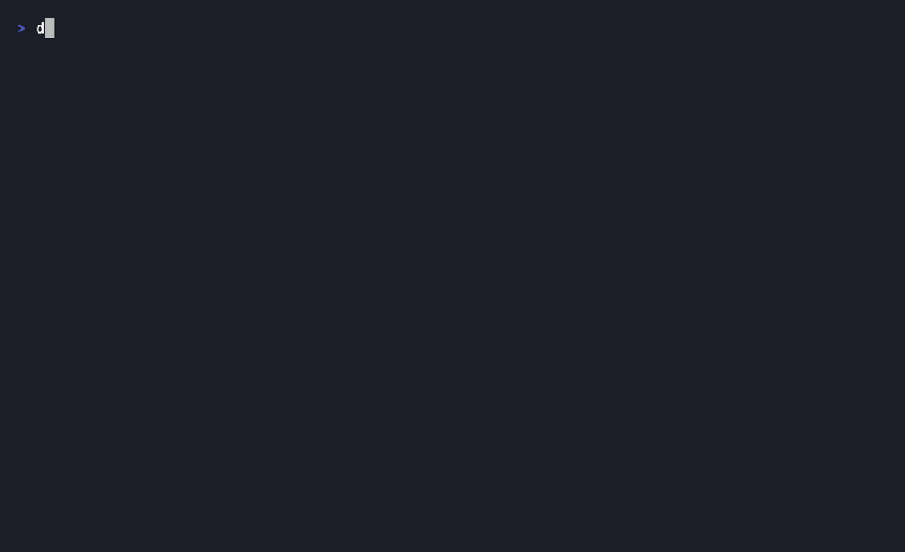

Set up once. Every AI knows you.
# describe yourself once (~3 min, every question skippable) $ npx dotme-ai init # auto-detect your AI tools and hook up every one $ npx dotme-ai connect all # done — restart your tools and ask one: "what do you know about me?"
Prefer a permanent install? npm install -g dotme-ai, then use dotme directly.

● one-command auto-connect · ● manual / paste (stdio-incompatible or UI-only setup) · anything else that speaks MCP works via dotme connect manual
Plain markdown in your home directory. Edit, version, or delete any time. No database, no lock-in.
The server runs locally over stdio. Zero network calls, zero telemetry, no accounts. Grep the package — there's no network code.
private.md is never exposed to AI unless you opt in. A broken manifest fails closed.
Every AI write lands in .changelog with the tool's name and reason. Make ~/.me a git repo and diff everything.